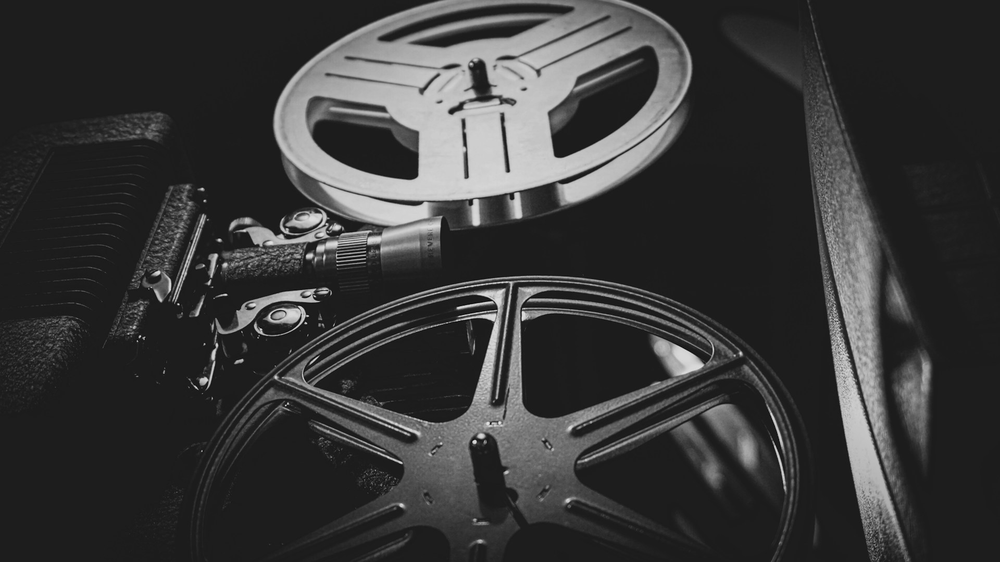

Keep Track of What You Want to Watch
Keep track of the movies you don’t want to forget. Your watchlist stores the films you’ve saved so you can come back to them anytime. It’s a simple way to organize what you plan to watch without having to search again.
